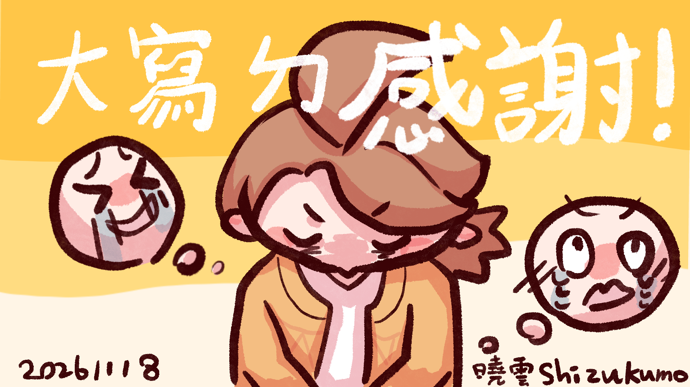

打招呼
哈囉，我是曉雲Shizukumo，歡迎來到我的避風港！ 顧名思義這裡是讓人(我)有安全感能夠暢所欲言的地方。 我習慣過得樸實安靜，需要很多獨處與思考的時間。(但我不無聊，喜歡畫畫寫字讀書散步旅行打遊戲看V……總之興趣多元XD)
我的創作作品通常會放在-> 曉雲ㄉ創作頻道 部落格則是會以圖文為主，除了收錄作品中割愛的細節以外，也是隨心所欲自由打滾的所在。 比較不習慣使用社群(雖然有帳號)，希望能以頻道與部落格為主軸。
部落格設立原因
社群軟體與網路媒體這麼發達的時代，幹嘛要自己架網站寫字啊？ 浪漫地說算是圓夢吧。 我其實一直想擁有自己的網站卻始終沒有規劃，一直很喜歡寫作卻沒有持續整理。 剛好2026年11月初，開始嘗試以繪畫影片的方式創作，對我來說是很新奇的體驗，但用圖像與口語表達的概念仍然不夠完全，因此我需要文字這個載體能夠闡述的資訊量與細緻度。 (沒有比較好壞的意圖，而是作品形式的呈現本來就各有限制。)
部落格預計會存放以下幾種類型的文章：
- 每支創作影片的細節補充
- 創作的心路歷程
- 生活體悟(牢騷)與胡思亂想
- 其他
接下來的創作計畫
一切都還剛起步，從發想主題、寫作、繪圖到錄音、剪輯……老實說並非每一項都在我的熟悉領域。 很多想法獨自消化也沒有不行，但為什麼要表達出來？ 因為我想要建立一個避風港，除了給予自己歸屬感，如果這些議題或想法能夠與世界上的誰產生共鳴就好了。
短期目標希望能夠趕緊習慣節奏、步上正軌，長期目標便是長成能讓自己心安理得的人吧。 請多指教！
- 不重要的情報：中英文名字對不起來的原因，其實暱稱最初是從日文命名的，曉&雲的漢字發音為akatsuki kumo，shizu為靜是我最喜歡的字，靜雲不太像人名而akatsukki又太長，故各取其好最終命名為曉雲shizukumo，期許自己能像浮雲自由，像破曉的希望，達到內心的平靜與寧靜。